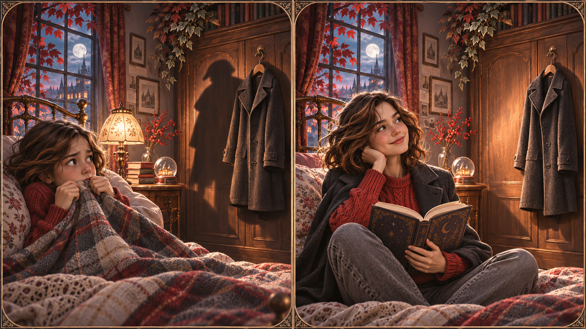
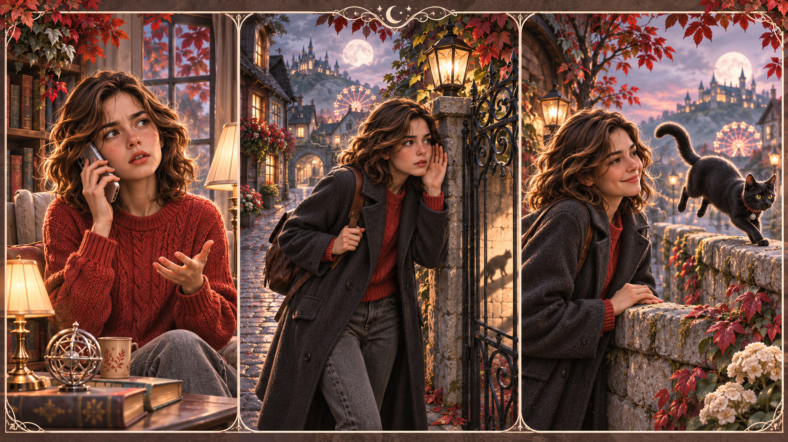
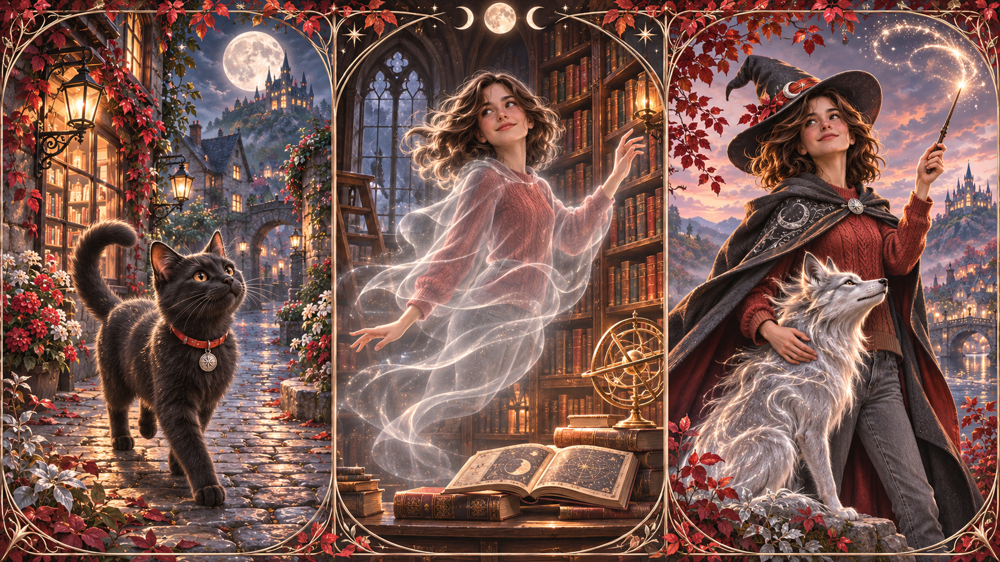
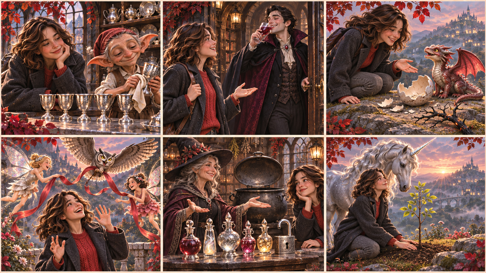
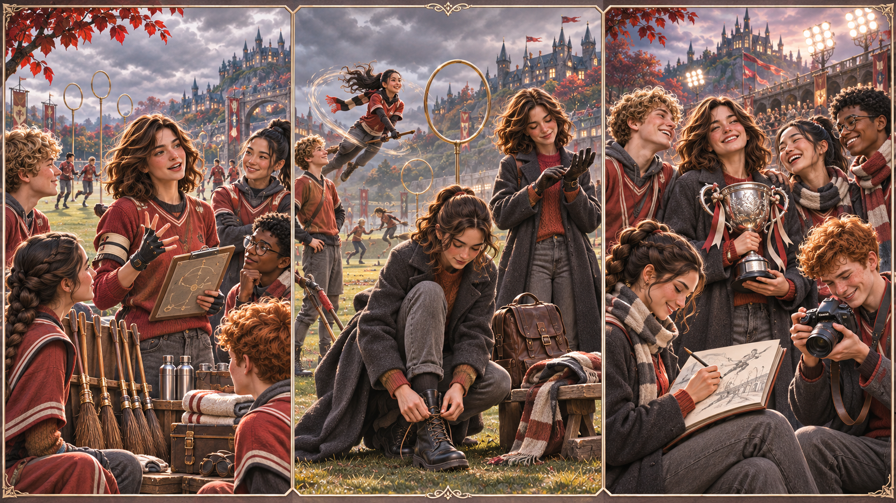

Today is not «a lesson about superstitions». It's a lesson about you speaking every word and every rule you've met in Lessons 1–10 — inside one real Friday the 13th. Each block below says exactly: where we are, what you have to achieve, which of our words and which of our grammar to use, what you say, and how I'll react.
I don't believe in Friday 13.
Continuous now · The cat is sitting on the stairs.
Perfect experience · Have you ever seen a Boggart?
Perfect Continuous ongoing · I've been avoiding ladders all day.
The lights went out at 23:17.
Continuous in progress + interrupted · I was walking when…
Perfect before another past · By 11, it had already started.
Perfect Continuous duration up to past point · She had been waiting for an hour.
It'll rain tonight.
going to intention · I'm going to stay in.
Continuous in progress later · At 11 I'll be reading.
Perfect finished by X · By midnight I'll have survived.
People believe… not It's true that….)I don't believe in Friday 13. I usually feel nervous on this day.The cat is sitting on the stairs. The portraits are whispering.
State verbs — stay in Simple · know, believe, mean, own, belong, prefer, understand, remember, hate, love, need
Think opinion = Simple · process = Continuous · I think it's a trick. vs I'm thinking about what to say.
I think… (opinion) and I'm thinking about… (process). Both about this scene.Have you ever broken a mirror? I've never lived through a Friday the 13th blackout.
Signal words: ever · never · already · yet · so far · since · for
yet.
kid-you vs now-you · same room, different year+ I used to be afraid of the dark. − I didn't use to believe in ghosts. ? Did you use to sleep with the light on?
be used to + N / Ving · to BE used to something now · I'm used to Fridays being weird.
get used to + N / Ving · process of becoming used · I got used to black cats after a month in Montenegro.
⚠ Don't mix: I used to avoid black cats (then) vs I'm used to seeing black cats (now).
I'd recommend ___ . Why don't you try ___ ? I'd rather not read ___ because…
The lights went out at 23:17.
Past Continuous background / in-progress · A cat was crossing the yard when the lights went out.
Complex Object · L6 — see / hear / watch + object + bare infinitive (whole event) vs -ing (in progress):
· I saw the cat cross the road. — I saw the whole event, start to finish.
· I saw the cat crossing the road. — I saw it in the middle of crossing.
What were you doing when…?bare infinitive · action in progress → -ing. Witness choice changes the whole story.First of all ___ · then ___ · at first I thought ___ · in the end ___ · at last ___ .
three moments of listening on Friday 13 · phone · gate · the catShe said that Friday 13 is cursed.
tell + somebody + smth · She told me three rules. tell smb to do · She told me to stay inside.
ask smb a question · Ron asked me a strange question. ask smb to do · Ron asked me to come over.
speak to / with smb · speak a language · I spoke to grandma for ten minutes. She speaks three languages.
talk to / with smb about smth · We talked about superstitions.
I heard footsteps follow me. I saw something moving.
must be very sure might be / could be maybe can't be impossible · Lupin must be loyal — he never leaves the Order.You can leave the common room.
must strong internal rule · I must finish my essay. have to external rule · Students have to stay inside after dark.
mustn't = forbidden · You mustn't wander alone. ≠ don't have to = not necessary · You don't have to wear a hat — it's up to you.
should advice · You should carry chocolate. might / may possibility · Something might happen at midnight.

pick one · cat · ghost · witch · the night is all yoursIf I were a black cat, I'd cross every street twice.
⚠ Not the same as First Conditional (If I see a cat, I will cross) — that's a real possibility.
If you buy a fast pass, you'll skip the queue.
− If you don't wear the wristband, they won't let you in.
= Unless you wear the wristband, they won't let you in.
⚠ After when / if / unless / after / as soon as — no will in that half.
will in the «as-soon-as» half.How many tickets? a few / few
Uncountable (money, time, equipment, luck) · How much money? a little / little
a few = some (positive) · few = not many (negative feel). Same for a little / little.

six witnesses · six tenses · one Friday-13 incidentCould I have ___ , please? I'd like ___ . What do you recommend tonight? Could we have the bill?
make / do · L8 make a wish · make a mistake · make dinner · make a mess · do your homework · do the shopping · do your best · do the dishes
Count · uncount How many mugs? How much butterbeer? a few sweets · a little chocolate
Could I have….How much ___ ? or How many ___ ?Excuse me, could you tell me the way to ___ ? How do I get to ___ ? Is it far from here? Which way to ___ ?
Giving directions Go straight · turn left at the ___ · take the second right · it's just across from ___ .

21:30 · the team debrief · pre-match huddle · the weird third quarter · the trophyto take on (face an opponent) · to knock out (eliminate) · to warm up · to call off (cancel) · to carry on (continue) · to beat (someone) to it
would like → only to V.who everywhere.
Formal report: no contractions, no slang, whom as object in writing — in speech who is fine.
Take either door. You can go with either of them.
any (of) — one of three or more or indefinite · Any talisman will do. Pick any of these three.
neither · none — negative versions · Neither path feels safe. None of the talismans impressed me.
Hogwarts · Hogsmeade · Moscow · Mount Elbrus
the mountain ranges, rivers, oceans, deserts, groups: the Alps · the Thames · the Sahara · the Weasleys
Common place + the: the pub · the lane · the carriage (specific) vs a pub (any).
The Hogwarts Express — she's been through everything.
Not a rule, a style choice — only where it feels natural.
One speech. 90 seconds. Must include at least ten items. No notes. No pauses longer than three seconds.
Katya — Friday the 13th isn't real. But by the end of this monologue I'll believe in you speaking every single thing you've learned. Go. 🕯
You just used every single vocab group and every grammar rule from Lessons 1–10 in one real conversation — on the one day in the year everybody has an opinion about.